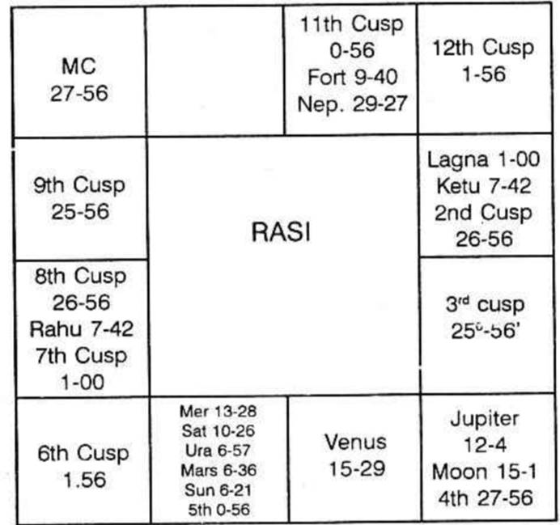

Judge the houses 2, 6 and 10: No planet is in 2 and 10: Mercury is in the 6th Bhava: Mercury's stars are Ashlesha, Jyeshta and Revathi. No planet is in any of the 3 stars. Therefore take Mercury as the strongest significator.
Lords of 2, 6 and 10 are Mercury, Venus and Saturn. Rahu is in Saturn's sign. Hence, take Mercury, Venus and Rahu as the 3 significators. 3, 9 and 12 indicate changes. Ketu and Moon in Ketu's constellation, conjoined with Ketu are in 3. Saturn is in 9 in the constellation of Moon. Therefore Moon, Saturn and Ketu show changes.
Mercury, Venus and Rahu indicate that you will be attached to Sanitary Engineering or Public Health Engineering. You will be dissatisfied when Moon (a planet for changes, contemplation, planning and scheming)-dasa is on and dissatisfied when Saturn sub period operates. At the same time Saturn does not give courage and confidence to kick off the job as it is in its own sign and the wavering Moon's constellation, Sravana. Jupiter, lord of 11, aspecting Saturn shows that friends and benefactors will suggest and encourage you to entertain hopes. be optimistic especially when Jupiter Anthra rules. Immediately after Saturn Anthra, Mercury follows which is in the constellation of Saturn. Mercury in Mars sign gains courage though it is in the constellation of Saturn. Moon brings about change in career. Mercury creates chances. Mars fulfils his desire. Hence during Moon Dasa, Mercury Bhukti, Moon Anthra he will leave the service and during Moon Dasa, Mercury Bhukti, Mars Anthra he will start a business. Therefore he will leave the job in April 1969 in Ashlesha or Hastha Nakshatra day. He will take up business in May 1969 when Mrigasira star second half will be transited by Moon. Mercury, Venus and Rahu show that he will take up contract business connected with water supply fittings. Mercury in a watery sign and in Scorpio, as the 8th sign of the Zodiac and the 8th denotes lavatory, waste, squatting, etc. Does not 8th house indicate in the part of the body, rectum and anus. Therefore one should take that 8th house denotes water-closet.
Therefore he will quit the job and do business. Mercury in 7, in the constellation of lord of 10 and 11 is very good. Sub of Moon shows speculative income.
If the Meridian or tenth cusp falls in,
(1) a fiery sign—the person is ingenious, active, learns mechanism, bold and takes ventures,
(2) an airy sign - science, literary, agent, adviser, artist, reporter, publisher,
(3) watery sign—liquid, spirit, shipping, overseas,
(4) earthy sign—land, agriculture, building, mining, politics, business etc.,
(5) movable signs give ability, leader, pioneer, new, original and discoveries,
(6) fixed signs—perseverance, industrious, service-old, well established concerns, steadiness,
(7) common signs—broker, touring, agency, public commodities, etc., service preferred to business.
Sri V.S. Ramaswamy, B.E.,
Superintending Engineer, P.W.D.,
Parambikulam Project,
Pollachi.
To
Mr. K.S. Krishnamurti
Sub: Double event – Uncanny prediction
Sir,
I am wonderstruck at the exact prediction forecast by you regarding my Promotion as well as the Promotion of my son-in-law and I am extremely thankful to you.
I consulted you regarding my promotion matters in the first week of January 1966. At that time my name was considered for promotion to the post of Superintending Engineer from Executive Engineer and for some reason or the other the proposal was shelved and I did not see any reason for the case being reopened for consideration again. I was regular reader of your esteemed magazine “ASTROLOGY AND ATHRISHTA” and it immediately struck me that you are the only person who could tell me exactly what was going to happen to me. I fixed up an appointment with you and met you. Sir, I was greatly pleased to hear from you that I will receive my order of promotion on 1-2-1966; and believe me exactly on that date I got my order. You also predicted that I would take charge on 3-3-1966 on Thursday and Punarvasu star day since I was running Rahu Dasa, Guru Bhukti. What an exactness in the date?
As regards my son-in-law, the prediction about my son-in-law’s promotion is discussed in the May 1966 issue of your esteemed magazine. Exactly as predicted, my son-in-law got a better job on a salary of Rs.1800/- plus allowance in an Engineering firm at Bombay in Sani Dasa soon after Mars Bhukti commenced. Sir, I am not able to contain myself and I am not able to express my feelings in words regarding the accuracy of your predictions. I do not know what more we require to prove the truth of KRISHNAMURTI PADHDHATI. Also as one learned in both the systems of Astrology – Western and Hindu – I find that none can predict the date of event so exactly, giving out satisfactory scientific explanations. I wish you, sir, a very long and prosperous life so that you may enrich the sublime science more and enlighten the public.
Yours truly,
(Sd.) V.S. Ramaswamy
In the Hindu Traditional Astrology, we take Brihat Jataka as the greatest authority and therefrom we quote and offer our predictions. Then there are various books written by various authors and also so many translations with their comments. Let me reproduce that which is mentioned in the text-book Brihat Jataka as regards the acquisition of wealth.
Count from the sign where your lagna falls or where Moon was. Find out the tenth sign counted from these two signs, if Moon is not in the lagna. If Sun occupies the 10th house counted from the lagna, sign or Moon sign then one gets wealth through father; if Moon is so deposited one gets from mother; if Mars, from foe; if Mercury from friend, if Jupiter from brother; if Venus wife; if Saturn through inferiors.
The other rule is, note the ruler of the 10th house. Also find out in which navamsa sign it is deposited and not the owner of the navamsa sign in which lord of the 10th house is situated; You

Balance of Moon Dasa at the time of birth is 6 years, 2 months, 26 days.
Self-acquisition is judged from the houses 2, 6 and 10. So one has to consider the strength of the significators in the following order:
1. The planets in the constellation of the occupants of the houses 2, 6 or 10.
2. The occupant of these three houses 2, 6, or 10.
3. The planets in the constellation of the lords of the houses 2, 6 and 10.
4. The lords of these houses,
5. The planets conjoined with the significators, and
6. Those receiving aspect from the significators.
Before proceeding further, it is necessary to mention clearly what a Bhava-House is, and which planet is to be taken as the lord of a Bhava-House.
A house commences from the cusp of a house and ends with the succeeding cusp. The cusp of the ascendant is 1° 00'. So the Lagna commences at 1° 00' Cancer. The next cusp falls at 26° 56' cancer. Hence Lagna Bhava is ruled by Moon. It extends from 1° 00' to 26° 56' in cancer. Further Moon is also the lord of the second house as the second cusp falls at 26° 56' cancer. The cusp of the 3rd house is 25° 56' in Leo. Hence the 2nd house extends from 26° 56' cancer to 25° 56' Leo. Even though only 3°-4° in Cancer happens to be in the second Bhava and 25° 56' is the extension of the second house in Leo owned by Sun, the lord of the second house for predicting finance, fortune etc. is Moon only.
Further, the traditional method of erecting the Bhava Chakra – Chaleeth as it is called in North India – needs some consideration as it is misleading. Suppose one's Lagna Bhava commences at 21° in Cancer and extends up to 20° in Leo; also presume that the planet ‘A’ was in 10° Cancer, the planet ‘B’ was in 25° Cancer and the planet ‘C’ in 10° Leo. In the chart which is erected by the Hindu astrologers in Bhava-Chakra, they show the planet ‘A’ in Gemini, and planets B and C in Cancer. It is misleading.
No doubt planet ‘A’ is in the 12th Bhava. Planets B and C are in Lagna Bhava. To represent these clearly and correctly, it is advisable to follow the table as under. should not forget to note that the 10th house that you have to count is from (a) Lagna sign, (b) Moon sign, (c) and the sign occupied by the Sun. Hence you have got three signs. So the tenth house will be three. The navamsa signs occupied by them will be three. The owners of the signs occupied by the three planets in rasi and in navamsa sign will be six. Then you should find out what the lord of the navamsa sign indicates.
If Sun indicates then one will make money by dealing in grass, gold, wool, medicine and the like. If Moon is the lord of the sign then one will gain through agriculture, pearls, fish etc. If it is Mars, metallurgy, by violent actions, like fighting etc. If Venus one makes money by dealing in gems, silver and cows and buffaloes. If Saturn, one will do tiresome work, cooly in prison, dealing with criminals, etc. Again the author emphasises saying that a person does such a work as is indicated by the owner of the navamsa sign occupied by the lord of the 10th house.
More or less in the same lines the other books written by Hindu sages give us the knowledge to ascertain one’s profession. Actually the text books are not helpful.
Twins are born. One is a medical person and the other a lawyer, educationist. If we follow the tradition, you cannot answer. You must and must fail. But follow K.P and You get the real answer.
If the sub-lord of the Meridian is in the constellation of the planet in Aries, generally you are attached to the Army or military or Police or Fire-brigade or any such job. In the boundaries you can volunteer yourself to carry out the territorial work; otherwise you will be inclined to use the nature of Mars and metal indicated by Mars who is the lord of your sigh; that if you will manipulate with fire and also with metal, steel. Many butchers, barbers, surgeons, chemists, gum-makers, cutlers, engine-drivers, stokers, chauffeurs, smiths, cooks and all workers using sharp instrument or using fire are governed by the sign Aries. Therefore, you would have in anyone of the avocation.
Even though you are really one of the most able executive types, yet it is advisable that you leave the management to somebody else and you take up planning, scheming and putting through the same, because you never stop working till you get exhausted; and also you take up some other work while the previous one is half done. Therefore, you should be above the manager directing others to carry on your ideas. You should pioneer them. Do not think that other people cannot do the work as perfectly as you can. Leave some of your work to them and try to reduce your amount of work which you think that you should do yourself personally. If by chance, you are not the head of the show but you accept a subordinate post, there will be a tendency for you either to be insubordinate or to be undiplomatic with your higher officials. If anyone would like to know your weakness then if you are given a subordinate position, your weakness will be brought to the front. You are really a leader to plan for new business and also apply your mind to produce more or extend the existing industry. You ability is more to contemplate, plan and scheme yourself; so leave the other work as regards administration, organisation, etc. to others. Be-A-Pioneer. You hate to apply for any clerical post or any secretarial post. You do not like to accept any routine work which you have to carry on for long number of hours. You do not partake in any other office affairs or strike or politics. If you are appointed as secretary in a branch office, you can shine better than in any other place. You are an able worker. You grasp the work of the whole business gradually and it is sure that when time arises you will be able to run the whole show singly if needed. A great defect in you is that while your work has been appreciated by the boss, you thereby gain the confidence and also influence. Slowly you develop such a mind to boss your boss. As an office manager you prove to be a good disciplinarian and also an able administrator. As a salesman you will never allow the customer to think for a minute but you will be going on talking so fast that the customer will be convinced and he will make purchases. No person can leave you without having some transactions with you. Any customer coming to your business shop will totally miss to buy what he wanted to, but he will be carried away by your ability. You will thrust on him those to your gains and to his satisfaction. As an advertisement agent, you will prove to be an able Director. As a tailor, you will have new designs and you can command a good market. As a dealer in instrumental music, you will find successful commercial artist and painter. You will be able to perform any duty far above average and satisfy the customer. You find that work keeps you always alive as you find the pleasure therein and you never get exhausted. You are a good mechanic; even any new machine handed over to you for repairs, will be handled by you, will set right whenever something goes wrong. You do not waste much time; you consider that there is no charm in returning an article or a tool or machinery, after delaying for a long time. You believe that speedy turnover and quick return will be most welcome to the customer; you know that it increases the number of customers. Some of you (unfortunate group) may take up an ordinary mechanic’s post or an operator’s post in an industry. You may be most popular mechanic in that shop; but there can be no opportunity when your ability is recognised and appreciated by the top person. So you may not have your promotion when you expect it. You will prove to be unfit to hold any such subordinate post.
If you take up medicine or engineering or law, you will shine. It is very important that you forget about your independence, authority and superiority complex. You cannot be very blunt and straight forward but you should develop diplomacy. Neither the customer nor the executive head of the department where you serve, cannot relish such an outspoken and blunt way of dealing with people. You should know how to move with others; be patient. You should be smiling and encouraging them, otherwise you cannot be a successful businessman. If you are tactful and diplomatic, you will be the leader among the surgeons or among the advocates or the engineers.
If you take up the educational line you have got very good opportunities to show your abilities. You are best fitted to handle higher classes. You are capable of explaining things in a simple way and demonstrate to them in the most impressive manner and give enough of practical instructions. You are not fit to coach up students who are dull witted and very slow to grasp.
If you take up independent business it is absolutely necessary to have either a partner or immediately next to you an assistant who will be offering advice, now and then and whenever you go at top speed, he will retard it. You are so ambitious and also impulsive that you want to do all the work in a very short time. Is it possible to put all the eggs in one basket at one stroke? When you select the partner in business try to choose the good natured person who is patient and persevering.
As a technician you will be very able to carry out the work in a stylish way. Even a barber can be a very capable person but his style in using the knife or the blade will threaten the customer.
As a nurse, you will attend to the child or the patient patiently for some time but if you are irritated, then you will never hesitate to retort; normally this duty does not suit you but when once you have passed this stage and you continue to be a nurse then you will be the top most. As a housewife you should avoid to dominate and also to dictate; but cultivate modesty and whenever something is to be done, you put forth your suggestion in such a way that he thinks that the whole idea is his. This is the way how you have to get happiness through such a person who will be less strong minded than yourself. This is nothing but your tact and in a way without his knowledge, you fool him. You can have greater pleasure in this life if you prove yourself to be an excellent hostess by entertaining his higher officials and friends. Actually your independent nature and irritant temperament must vanish. You do not find much pleasure in moving with people and you do not want to go to society and waste your time, so you will be using your leisure time on useful hobby and in sports, to have health and peace.
When many jobs are mentioned for one sign, how to select a few and thereby be useful to the querist.
You note the sub-lord of the meridian; the lord of the constellation in which it is and the lord of the sign. Then you are having three planets, i.e. the lord of the sub; its star lord and the sign lord. This combination gives correct clue. It eliminates many and guides to select a few.
Aries: Lord is Mars. If the other two planets, i.e. lord of the sub and the constellation lord were to be.
(a) both Sun, then Government service, Defence department or surgical department.
(b) Sun and Moon: i.e. either Sun or Moon is the sub-lord and the other is the lord of constellation, Then Navy, Boiler feed, Steam engines, Nurse in the surgical wards.
(c) Sun and Mars: One who goes to the front during war, Military; Sun and Mars connected with Jupiter, Law and order, Police. Connected with Venus also, Traffic Police.
(d) Sun and Mercury: Postal, communication, telegram, telephone. If Jupiter is connected press and publicity, journalism. If Venus is also connected Radio, Mechanical Engineering, Works and Housing.
(e) Sun and Jupiter: Education department. Even in Military, Military School, Law department, Judge, Religious Endowment Board, Finance department, Nationalised banks, Reserve Bank.
(f) Sun and Venus: Transport, Air force, Music, Medicine, Chemical, Veterinary department; if Saturn is connected leather industry or birth control. If Jupiter is connected, animal husbandary. Saturn shows slaughter house, lethal chamber and cremation ground, burial ground.
(g) Sun and Saturn: mines, metals, coal, mine ores, jailers, sextons, grave diggers, watchmen, night duty.
(h) Moon and Mars: Navy, Sailors, dealing in petroleum products.
(i) Moon and Mercury: interpreters, secretaries, Marine engineers, messengers.
(j) Moon and Jupiter: Physicians, overseas bank, foreign exchange.
(k) Moon and Venus: Painters, Milk dairy farm, Toilet makers, silk mercers, Tailors for woman, nurses, butlers, cooks.
(l) Moon and Saturn: Excavation of wells, reinforcing the bund of the lakes, geologists, Petrol dealers, Oil Pumpsets, etc.
(m) Mercury and Jupiter: Councilors, clergymen, advertising agents, Press, Accountants in Finance as bank.
(n) Mercury and Venus: Music, Radio, Sanitary engineering, artists, automobile engineers.
(o) Mercury and Saturn: Hand-writing experts, thumb impression experts, mine engineers, geologists.
(p) Jupiter and Venus: Income-tax, Sales-tax, commercial-tax Judges, Law Court, Food Department. Agriculture, fertiliser.
(q) Jupiter and Saturn: Philosophy department, politicians, Trustees especially for the money of the deceased.
(r) Venus and Saturn: Leather, skins and hides, Slaughter house, Lethal Chamber, etc.
For Rahu and Ketu, one is to note in which constellation it is and then according to the lord of the constellation in which Rahu or Ketu were, one is to offer the prediction.
To ascertain one’s profession note whether if the sub-lord of the meridian is SUN, and the Ascendant of the gentleman is Aries:-
If Sun is the significator of the first house and it is the sub-lord of the 10th cusp, then you will gain by your own efforts and personal contacts. Your frank and outspoken nature will bring you success in your matters. You will not depend on others to act on your behalf. You will prove to be a good organiser and administrator. If you are an advocate, appear in the court of law and do not entrust the job with your juniors. If you are a surgeon you do attend the patients personally. You understand the mind of the seniors and that of the colleagues and carry out your work efficiently and have harmony. You prefer to be independent and firm. As a doctor you will prove to be good for treating cerebral cases, Neuralgia, Coma and Head injuries. Avoid rash action.
If Sun is the significator of the second house, you will be industrious and you gain money by your work, hard work and that too for long number of hours. You will deal in cash and you can serve in a bank in the currency exchange department. You are also best suited to be an auditor or cost accountant etc. As years pass on, you will be promoted as Director. You are good in collecting the public money for any cause. Your sincere work and earnestness will be amply rewarded. You will find it to save much as you are generous and you find pleasure in social intercourse. It is good for trade and business. You will gain through investment and speculation.
If Sun is the significator of the third house, you can be a good journalist. You can edit and publish books; or serve in the transport department or postal or telegraph or any other communication departments. You will prove to be a good salesman. Clearing agency for shipping, supplies to transport and traffic departments or to serve in bus, tram, railway or in any press or paper mill will be advantageous. You can rise to a good position in the university by having the goodwill of the seniors. Your relatives and neighbours will contribute for your success. As a lawyer you can draft intelligently, contracts, agreements, notices, correspondence, etc. As a liar, you will be very clever in drafting false reports or writing anonymous letters. You can thrive as an ambassador or messenger or one to inspect the branches from the headquarters or to be a camp clerk or a tourist guide. Hence travel, transport, sport and drama are advantageous. If the sub-lord of the 10th cusp is Sun and he is also the significator of the 4th house, you are best fitted to have your residential quarters and your office in the same building. You can own boarding and lodging house or manage them. You can prove yourself to be an expert in interior decoration. You can make fortune by being the broker for buildings, lands, estates, cars, etc. Further you can manufacture such of those materials useful to furnish the house or for kitchen purposes. You can gain through mother or her relatives and take them as partners. You can invest money on constructing living quarters as colonies, instead of building for office purpose. You can deal in real estates.
If the sub-lord of the 10th cusp is Sun and it is the significator of the 5th house, you can work in stock exchange or in any other speculative market; also you can work in Cinema-theatres, dramatic field and other places of amusements. You also can work in family planning. As a Doctor, you will specialise in Paediatrics; you, as a manufacturer, produce things, toys, etc. for the use of children. As an author of books you will be fortunate in publishing those useful for children. Also in love affairs and matters chiefly connected with every day life. As a teacher to young children, you will shine more than for adults. If Sun is strong you can become a cinema star. You can also invest and become famous. You can become the leader of the scouts.
If Sun is the significator of the sixth house, you are best suited for the labour or public health department. 6th house gives the desire to serve all, especially those who are suffering from physical ailment or mental torture. You can have promotions in service if you are attached to the medical relief in any concern. In a factory you can specialise in repairing instruments and tools and machines. You will prove to be a good agent in emigration department. In a bank you prefer to be in the deposit department. Speculation will pay. Music opera and cinema can be a good source of income.
If Sun is the significator of the 7th house, you are best fitted to be a peacemaker. You are invariably fair in your dealings. You consider both the sides and do the justice. Therefore you can be a judge, or you can hold the post of a public relation officer or one to mediate between two enemies or an officer for arbitration. In the Government the best position for you is the Embassy. As a social worker you can undertake to bring about marriage among couples. You can work as a marriage broker. If you are an advocate, you gain by appearing for divorce cases, or of such crimes committed on the sexual side. You can manage with all in a friendly way so that you are the friend of all. As a doctor you gain through the other sex. One defect is that there can be loss by theft.
If the sub-lord of the 10th cusp is also the significator of the 8th house you gain by partnership and legacy. You will have steady fortune after marriage. You work very hard and you do business using other's money. You can be an Executive Director. You may deal in public funds, pension papers, gratuity, bonus, taxes, etc. If you are an advocate you will deal in estates and wills. In Government service, Finance and Revenue departments are beneficial. As an independent person, you practice Income-tax and you are the best advisor. As an auditor you can make fortune. You can deal with the money of the dead and insurance. You may attend to death duty, estate duty, etc. Do not speculate.
If Sun is the significator of the 9th house you are ever hopeful and charitable. You will have the desire to investigate science. As a businessman you will make long tours and have connections with foreigners. Export, import, foreign trade and to have branches in the foreign are all advantageous. University is the best place for you. Service in religious places are also well suited. Make fortune in a foreign land. You can even permanently shift to foreign. You will reach a covetable position in any technical line of business. Branches in the foreign, will give you larger profits than all the business put together in your native land. You will develop taste for fine arts, handicrafts and science.
If Sun is the significator of the 10th house you can manage and execute whatever you wish. You work hard for long period and realise your ambition. You can plan and put through your schemes to a great magnitude. Though you do not meet with any disappointment, you will continue to be industrious. You can have a business of your own. You can deal with foreigners. Export and import will also pay you satisfactorily. In Government service you will have your legitimate improvement in status: your claim will never be ignored. You will have advancement in your career. You can reach top most rung of the ladder to which you are entitled to. In politics also you will hold a decent position commanding respect from others. In speculation or in theatrical field you will be successful with good gains.
If Sun is the significator of the 11th house, one can be a successful politician and businessmen, as you will have lofty ambitions, desires and dignity and also many friends who are reliable and faithful and be the benefactors. Your colleagues will co-operate and they will never betray you. You can serve in clubs, societies, restaurants, lodging houses, so that you will have many opportunities to come in contact with new people and increase the number of friends. You will succeed in such a pursuit where you have to apply your mind and concentrate. You will show your inventive genius in every action of yours. You can be a legislator or ambassador or messenger or peace maker or arbitrator or a sportsman.
If the sub-lord of the 10th cusp is sun and it is also the significator of the 12th house, then you will prefer to work singly, undisturbed in an unfrequented place. You can do your job successfully and most satisfactorily by avoiding the company of others. As an organiser you will instruct others politely and calmly. You will prefer to serve in Jails or Hospitals or Asylams. If you are an advocate you furnish all points to the senior and you remain behind the scene. You will have one tuitored by you; and let him represent you. In an army, you remain in headquarters and give instructions to the people in the war front. If you start a factory, it will be away from the town and also the industrial estate. Invest on Government bonds to have steady gains than to take a risk of buying other speculative shares. Speculation causes ruins. You will find pleasure through investigation of things of mysterious or research nature. You can carry on such a work without any body's knowledge and collect information. For secret activities you are best fitted.
Thus one should know the sub-lord of the 10th cusp. Then to each lagna-born how that particular planet will behave and how his indications get changed according to the houses which it signifies.
When the profession is in millions, to classify and group them into 9 alone is never helpful to querist. But in this method you can find that there are 249 cusps and each may be ruled by any of the 9 planets and each planet can be the significator of any of the 12 houses. Hence you have 249x9x12 classifications. It comes to nearly 26,892 divisions. This is the only proper method.
One cannot commit all the 26,892 combinations. But one should understand how it is analysed and then the result arrived at. If one understands the principle then it is easy to pinpoint.